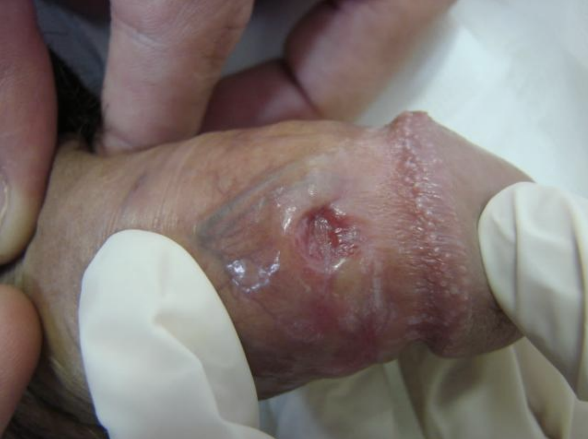
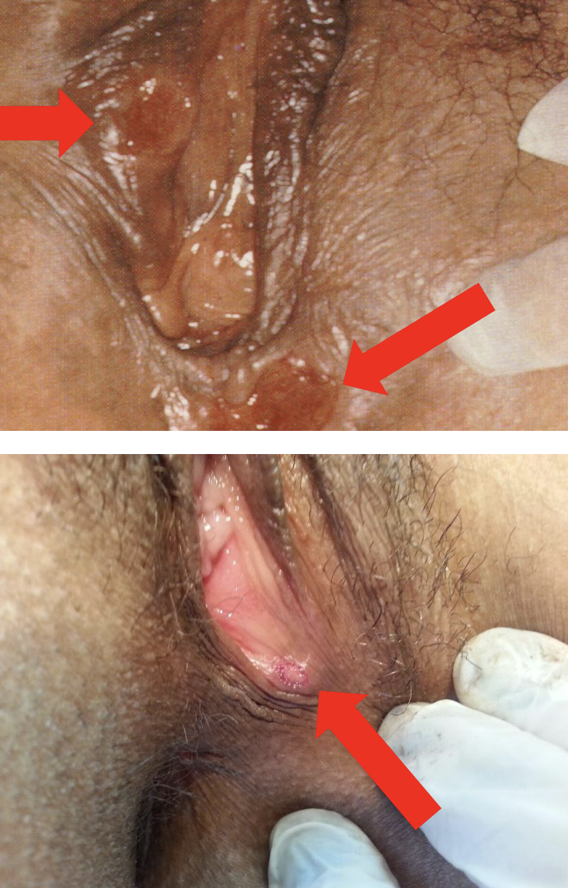
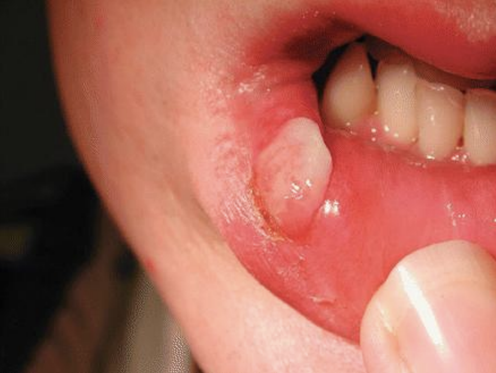

→ Tem remédio que bloqueia o HIV em até 72h. Teste de sífilis, HIV e hepatite na hora. Tudo de graça.
É sífilis começando. A bactéria continua no corpo mesmo depois que a ferida some. Não espera. Vai testar.



Sífilis congênita é 100% prevenível — um exame e uma injeção resolvem. Então por que ela existe? Porque o acesso à saúde não é igual. Pesquisa da Fiocruz com 15 milhões de registros de nascimento mostra o tamanho do problema.
" São os determinantes sociais estruturais, como o racismo e suas manifestações, que colocam essas mulheres em maior vulnerabilidade — em decorrência das barreiras por ele impostas. — Andrêa Ferreira, Cidacs / Fiocruz Bahia · The Lancet Regional Health Americas
O Código Penal Brasileiro criminaliza quem transmite IST sabendo do próprio diagnóstico. Não precisa nem ter transmitido de fato — basta o risco.
Expor alguém a risco de IST sabendo que está contaminado: 3 meses a 1 ano de detenção.
Com intenção de transmitir: 1 a 4 anos de reclusão.
Se o omisso efetivamente transmite a doença, alguns tribunais enquadram como lesão gravíssima.
Pena: 2 a 8 anos de reclusão. Se for você a vítima, leva o laudo do exame na delegacia mais próxima.
A partir dos 12 anos, você pode procurar saúde sexual na UBS sem precisar de responsável. ECA + Resolução CONANDA 41/1995.
Médicos, enfermeiros e agentes de saúde têm obrigação legal de sigilo (Código de Ética Médica, arts. 73 a 76). Nada do que você fala sai da consulta.
Qualquer pessoa, com ou sem documento, com ou sem comprovante de residência, tem direito de atendimento no SUS. É um direito constitucional.
Camisinha externa e interna são de graça, em quantidade livre. Você não precisa explicar pra quê, nem pedir com vergonha.
Independente da cor, orientação sexual, identidade de gênero, deficiência, religião ou classe social. Se sentir discriminação, denuncie pelo Disque 100 ou Ouvidoria do SUS.